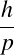
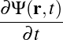
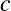
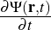
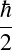
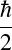

Figure 1. Cartoon of plum pudding model
by
Orgho Neogi
A thesis submitted in partial fulfillment
of the requirements for the Doctor of Philosophy
degree in Physics & Astronomy in the
Graduate College of
The University of Iowa
May 2024
Thesis Committee: Name of Thesis Supervisor, Jane Nachtman
Yaser Onel
Milind Diwan
Mary Hall Reno
I have yet to see any problem, however complicated, which, when looked at in the right way did not become still more complicated.
Poul Anderson
ABSTRACT
Prior to your first thesis deposit, replace this text with the text of your scientific/ scholarly abstract. The text of this abstract should be double spaced and each new paragraph should be indented.
This abstract is required for everyone except DMA and MFA students.
PUBLIC ABSTRACT
Prior to your thesis deposit, replace this text with the text of your public abstract. The text of this abstract should be double spaced and each new paragraph should be indented.
This abstract is required for all thesis/dissertations. This abstract may be up to 250 words and should be written for a non-academic lay audience. In writing your public abstract, avoid jargon and technical language as much as possible.
The ability to communicate research simply and clearly is an important skill. The public abstract helps convey ideas beyond one’s immediate academic circle, facilitating communication with colleagues who do different kinds of work and possess different dimensions of training.
Think of your public abstract as your “elevator pitch” or what you might tell someone who asks, “What is your thesis about?” You may only have a few minutes to explain it to them while keeping their attention and using terminology you are sure they will understand without further lengthy explanation.
Another way to think of your public abstract is like the description you would read on the inside of a book cover.
I have yet to see any problem, however complicated, which, when looked at in the right way did not become still more complicated.
— Poul Anderson
People working in the field of high energy physics have a tendency to concern themselves with attempting to solve problems that are incredibly complicated. So, perhaps, there is a touch of irony that the problem that they are trying to solve is not only incredibly fundamental, but also very simple to state. The question can be boiled down to – what is the stuff in our universe made of? What immediately follows from this fundamental inquiry is how is matter made up of these things ; or to put it another way, how do the fundamental building blocks interact.
In some sense particle physics tries to distill matter and the interactions therein down to the smallest possible level to which it can be broken down. Turns out that breaking these concepts down to this elementary level of specificity is an incredibly complicated process of which we have merely begun to scratch the surface. As such,this paper focuses on a tiny fraction of these fundamental building blocks – the elusive neutrino with the hope of just perhaps being able to untangle some of the myriad of secrets that it harbours.
Before the protagonist 1 of our story - the neutrino - can be formally introduced, the stage has to be set. A good candidate to set the stage would be the standard model which describesthree of the four known fundamental forces, electromagnetic, weak and strong interactions (it struggles to deal with gravity) and classifying all known elementary particles. Just like any foundational theory that undergirds a subfield of a subject, the standard model definitely wasn’t developed in a day and as such, it may behoove us to at least go over the high points ofits development in order to have a better understanding of the context that surrounds neutrinos.
One may definitely quibble about where our understanding of the fundamental particles starts from, after all, humans have been trying to find out the nature of our universe and the things that make it up going back as far as the 4th century BCE with Plato positing that everything is made up of 4 elements (water, wind, earth and fire)[1] but I think it makes sense to start at the discovery of the first of the particles that made it’s way into the pantheon of the standard model; the electron.
For the longest time, humans had thought that atoms were the smallest particle that makes up everything in the world and cannot be subdivided further[2] but this idea had started to come under scrutiny by the late 1800’s. Even then, it was thought that if anything were to make up atoms, they would n’t be lighter than the lightest atom. However, in 1897, Thomson would come in with evidence that there not only were particles that made up the atoms, but that they were on the scale of 1000 times lighter than hydrogen. He decided to shoot cathode rays at a thermal junction so he could measure the generated heat and neasured how much they deflectedmagnetically. He also measured the electrical deflections by lowering the pressure in the chamber where he was measuring the deflection. Through these experiments, discovered the electron 2 and believed that it was a fundamental part of all atoms that was very light and held a decidedly negative charge.[3]
The discovery of something so much smaller than the lightest atom threw Dalton’s atomic theory out the window. His theory claimed that everything in the universe was made up of atoms which would vary in size and mass based on the element. These atoms could not be created or destroyed, but could reaarrange themselves through chemical reactions. It could be argued that Dalton’s model was a progenitor for the idea of conservation of mass and energy. Despite being such an important idea, even before the discovery of electrons, the theory wasn’t fullproof; it could not account for isotopes of the same element having different masses, but the electron blew the idea wide apart.
A new theory that looked at the atom not as the smallest thing that could exist but rather something that had other things inside in some sort of structure had to be developed.
There were numerous models that tried to tackle this problem and one of the first was proposed by Thompson in 1904 as the plum pudding model. The first problem to grapple with was that electrons are negatively charged while the atoms themselves are electrically neutral. To get around this, the plum pudding model suggests that the electrons were suspended in a morass of positively charged particles 3 with the charge between the positive and negative equalling out to 0. Thomson believed that the mass was evenly distributed throughout the atom.
The plum pudding model struggled to explain how these charged particles were so copacetic with each other despite being such small physical distances apart. It was well known by then that opposite charges attract while alike charges repel. It also failed to provide any explanation of the spectral lines observed in hydrogen. Darker clouds were still on the horizon for Thomson’s plum pudding model.
Between 1908 and 1913, a number of alpha (α) particle scattering experiments were performed by Hans Geiger and Ernest Marsden. These took the form of shooting α particles at a incredibly thin piece of gold foil. Based on the plum pudding model, it was expected that the α particles would not be deflected however this turned out not to be the case at all. To be fair, most of the α particles did indeed go straight through the gold foil, their trajectory not disturbed in the slightest. A smaller fraction did get deflected, some by a small angle and others by a large one. But the astonishing part was that an even smaller fraction, about 1 in 20000, shot right back at the direction the particle gun was shooting from.
So a new model was required to explain the discrepencies away; in comes Rutherford. He looked at the gold foil experiments done before him and ran with it, expanding upon them and developing a new theory on the substructure of the atom. He proposed in 1911 that atoms were mostly just empty spacewith a highly concentrated segment of mass at the center of the atom – he called this central mass the neucleus of the atom. In Rutherford’s atomic model, the electrons orbit around the positively charged neucleus.
Only, one little problem. When things move in a circular orbit, they are accelerating and when a charged particle is moving in an orbit like that, it should be constantly radiating energy leading to it eventually falling into the neucleus rendering this formulation of the atom unstable. It should also be emitting a continous energy spectrum from the electrons, but hydrogen has discrete spectral lines.
Bohr tried to come at this from an angle that resolved the spectral line issue with Rutherford’s model. Bohr proposed that electrons move in fixed orbits, thus explaining the discrete lines of the hydrogen spectra and that atoms emit light when an electron jumps from a higher energy level to a lower one.
This still doesn’t explain away why the electron doesn’t collapse into the neucleus . However, it does a very good job of modelling hydrogen and hydrogen-like atoms under most normal conditions. The other issue with Bohr’s model is that it fails to adress De-Broglie’s Hypothesis of the dual nature of matter.. To get there, we have to delve into the wonderful world of quantum mechanics.
What led to the development of quantum mechanics was spirited debate about the true nature of light. Newton was one of the first to throw his hat into the ring; in 1672 he decided to build upon the corpuscular theory coined by Descartes, arguing that light was made up of discrete particles just like everything else. Problem was, that around the same time Robert Hooke and Christian Huygens performed experiments that led them to believe light was in fact not a stream of particles but rather a wave. This wave view of light did a much better job of explaining how light refracted compared to Newtons model.
The position of people beliving that light was in fact a wave, not particles got a lot stronger in 1801 thanks to double slit experiments by Thomas Young. This was an experiment where there were two slits cut into a screen and light was then shone through it being visible on another screen once it had made it past the slits. If light was indeed made up of particles, the expectation was that we would see essentially 2 bright spots on the final screenthat corresponded to the two slits. Instead, what we got was an interference pattern that iss typical of waves.
At this point, the world is pretty much in the wave camp for the purposes of modelling light, but the idea that light is made of particles was about to be revived from the dead by none other than Max Planck. He was trying to solve the problem of black body radiation; namely, that the energy carried by electromagnetic waves is emitted and absorbed in discrete quantities. His solution was to come up with the idea of discrete quanta rather than a continously emmisive spectrum. He did this through the creation of the what we call the Planck constant today (h), a proportionality constant that he called the quantum of action.
This was fundamentally the introduction of quantum mechanics. a quite contentious idea at the time, highlighted by the following quote from Bohr.
quantum theory cannot possibly have understood it.
— Neils Bohr
Despite being frought in debate, the idea of quantum mechanics simply would not go away. Einstein would go on to build on the Planck’s ideas and proposed that light was made up of discrete packets of energy that he called photons. He developed the Planck-Einstein Relationship, connecting energy and the frequency of light.
| E = hν | (1) |
Where E stands for energy, h for thePlanck constant and ν for the frequency of the photon.
This equation was to explain the results that Einstein had gotten from his experiments regarding the photoelectric effect. In 1914, Robert A. Millikan went on to confirm Einstein’s idea by doing a highly accurate measurement of Plank’s Constant using the photoelectric effect. Photons would go on to be included in the list of particles we deal with in the standard model today.
This new evidence went in the face of the wave nature of light which had been longstanding. It seemed like there were phenomena that could be explained by thinking of light as a wave and other phenomena that could be understood if we looked at light as a particle.
When looking at artificial intelligence (AI), everything falls on a spectrum from easily explainable to being a black box when thinking about how the machine makes it’s decisions. On the easily explainable side of things, we have things like decision trees.
A decision tree is where we sort the data by asking a sequence of questions and following the flowchart down to where it leads. By the time we are at the bottom of the tree and have classified the data we can say exactly how the model does it’s classification. For instance if a decision tree is used for mortgage decisions and the model says no, we can query and learn that it said no because you had too low income or too low credit score for instance.
By contrast, a machine learning model like a neural net is almost a black box with regards to how the decisions are made. We can query the model and ask it what it made its decisions based on, however, the features it picks out often isn’t decipherable to humans in any way. As in the previous example, if the answer to a mortgage is no, we have no real idea why the model made that decision. That being said, neural networks are often able to come up with better outcomes for classification that simple models like decision trees are. In the mortgage example, even if the neural net can’t tell us how it comes to the conclusion of approving a loan, it is still more likely to be able to better tell who will be a good credit risk compared to the decision tree. That’s often the trade off that we make when deciding on a more opaque model. That’s why even though they are opaque in how they come up with their answers we still rely on them so heavily. Because we can empirically test through monte-carlo studies how well they perform both in term of efficiency as well as how often these models misidentify the data that we are throwing at it.
While a neural network is opaque about how the decisions are made, the model itself doesn’t have to be a black box for us. We can take a peek under the hood and see how these models work. To do so, we start up from the basic models like a perceptron and work our way to a graph neural network, finally connecting it to how neutrino reconstruction works.
A lot of things that seem incredibly easy to humans – such as recognizing the difference between say a cat and a dog – are very difficult for computers to do. What makes it difficult to make that sort of classification is that it is hard for humans to define concrete rules about what makes the picture of a cat different than the picture of a dog. Neural nets approach this in a completely different fashion.
Instead of trying to define rules about the features that differentiate the picture of a dog vs a cat, we instead classify a whole bunch of pictures by hand. 4 Then throw those pictures at the algorithm with the correct answers and over time the computer learns to tell the difference between that of a dog and a cat. We call an algorithm like this that separates things into two piles a binary classifier. There are many different kinds of binary classifiers with a whole host of advantages and disadvantages but we will start with one that is simple to understand; the perceptron.
A perceptron takes a number of inputs that are binary in nature and produce a single binary output ie.is this a dog? The figure 8 has 3 inputs (x1, x2 and x3) although, more or fewer inputs may be used. Each input then is given a weight – w1, w2 and w3 in this case – and the output calculated thus.
| y =  | (2) |
Used in this fashion, a perceptron can only make simple choices. Raising the threshold makes the classification tighter while lowering it loosens the classification. Because the output of a perceptron is binary, for more subtle distinctions, we can use the output of a perceptron to feed into the input of the next one thus creating a network that is more able to measure subtlety.
Varying the weights of the inputs in combination with the threshold for the output allows us to get different models of classification. The neurons in the first layer are only able to make simple decisions based on the raw input but because we use their output as the input to the second layer, the second layer can make more abstract decisions with a degree of subtlety impossible not only with one perceptron but also with even a single layer of perceptrons. The complexity of the discrimination by the classifier increasing with both the number and layers of perceptrons in the network.
With the correct weights and threshold values, we can get any binary classifier we want using a set of perceptrons. That, however, puts us back at our original problem of classifying whether something is a dog; namely, if we knew what features to look for (i.e. what weights and threshold to use) it wouldn’t be hard explaining to a computer what a dog was. The true innovation comes with using learning algorithms that don’t require input from the programmer to set these weights and thresholds.
If we want to use algorithms that can adjust weights and thresholds (otherwise called biases) automatically, we need some method where a small change in the weight only causes a small change in the output. Because perceptrons are binary, this is impossible to do with only perceptrons.
A small change in the weight to an input to the perceptron can flip the output entirely. While this small change in weight can make one of the outputs of the network better, it may also affect the rest of the network behave in unpredictable ways. Going back to the dog and cat example, while changing the weight slightly may make it better at recognizing dogs, it may wreak havoc on how cats are identified.
This is where sigmoid neurons come in.
While perceptrons are effectively step functions, flipping from 0 to 1, sigmoids are more smoothed out. This means that a small change in the weight can lead to a small change in output. The sigmoid function can be written as
| σ =  | (3) |
This means that a sigmoid neuron can be written as
|  | (4) |
where the b stands for the bias of every input. While this looks different than the perceptron at first glance it is just a more smoothed out version of it. One key thing that we lose with the introduction of sigmoids is the linearity that perceptrons afforded us. What we gain is the ability for our programs to automatically adjust their weights and biases because a small change in weights does lead to small change in output as shown in equation 5.
| Δy ≈∑iΔwi+Δb | (5) |
More than the exact formula of the sigmoid neuron what matters is the shape. As a result, other neurons can be used in it’s stead which retain the property of having a small change in weight lead to a small change in output. Some of the more popular of these functions (called activation functions) are RELU and softmax. Each have their own advantages and disadvantages and may even be mixed in the same neural network
A number of these sigmoid neurons (or neurons with other activation functions) can be strung together to make a neural network. Each neural network has 3 main parts.
First, we have an input layer. This is all the inputs that go into a neural network and is usually represented as a vector. Each input adds one to the dimension of the input vector. Even something like a 2d picture can have its rows stitched together to make one long vector of inputs.
The middle bits are called the hidden layer, not for any profound reason, but just to distinguish them from the input and output layers. You can have as many hidden middle layers as you want in the network. The trade off is usually one of efficiency and accuracy. The more hidden layers you have, the more accurate the output will bebut at the cost of requiring more time to train because there are more weights to get right. After a point, adding more layers does not improve accuracy in meaningful way while still taking longer to train. This makes creating a good neural net less of a hard science and more of an art form.
Finally, we have the output layer. This layer usually has one neuron for each thing the classifier can bin the input into. In the dog and cat case, we would have 2 output neurons, one that signifies dog and the other cat. However, the neurons won’t directly tell us whether the picture contains a dog or a cat but rather give us two values. One of these values indicates how likely it is for this picture to contain a cat and the other represents the likelyhood that the picture contains a dog. After that, it is still up to us to decide on cutoff values to determine whether we will say the picture contains a cat, a dog, both or neither.
So far we’ve talked about the fact that weights and biases can be adjusted and that it only works if a small change creates only a small change in output while glossing over how exactly the computer automatically calculates these weights. Time to peel back that layer! 5 We use a technique called gradient descent.
To start off, we need a set of inputs x where we already know the answers y. This is called the training dataset. Once the weights and biases are adjusted we can then use the model to query a set of inputs that we don’t know and be reasonably certain that it won’t give us garbage outputs. To do this adjustment, we need to define a cost function.
| C(w,b) = ∑x||y(x)-a||2 | (6) |
Where n is the number of training samples and a is the vector of outputs from the network. We want a set of weights that make the cost as small as possible and we can do that through a method called gradient descent. The function described here is not the only cost function possible but is a simple one to start with. To use gradient descent, we can do
| Δv = -η∇C | (7) |
where v is the set of weights and biases and η is the learning rate. The more aggressive we set η the quicker training will go, but it may end up actually increasing the cost function. So we want an η that is small but not too small.
Developing a neural net isn’t just about figuring out the neurons for the network and adjusting the weights. The task of making a neural net can be broken up into 3 main parts.
The first step of any kind of model development is looking at both what kind of data is available as well as what kind of input we might want to make on the model. The data may be scattered about in many places and often will require processing before it can be vectorized.
In the context of neutrino reconstruction, this may require running monte carlo simulations with standard software e.g. (LArSoft, NDsim) and then taking the output from those simulations, processing it into standard images that libraries like pytorch or tensorflow can take as input. It is also important to think about standardizing the size of those images and thinking about how to toss out the sheer amount of data that has no hits in it because neutrino events are so sparse.
Once that has been done, we can look at actually implementing a neural network based on that data. This involves setting out training pipelines which will determine how the data flows, as well as figuring out the structure of the network that will be made. Tests also have to be written for the network so that it can be deployed robustly. Once the training with the training dataset is complete, the model has to be validated with a validation dataset. The validation set will also be a set where the answers are previously known so we can see how well the model performs on data that it hasn’t previously been run on.
Once the model has been validated, it can finally be deployed for real world data where we don’t have the answers. This is the inference part of the model lifecycle.
There are two parts where a model can be optimized. The first is the training phase. Models can take a long time to train even if a lot of data is available which means it is often worth it to optimize the training phase. This sort of optimization is called hyperparameter optimization because the actual hyperparameters (weights and biases) aren’t being tweaked but rather the parameters that guide how they are formed. It involves manipulating the structure of the network as well as changing factors such as the learning rate. The difference between a naive implementation and an optimized one may lead to a speedup of hours for the training.
Training isn’t however what a network is spending most of its time doing. Most of the time a network is used to query for answers, i.e. inference. Inference speedups can be done through a number of ways such as using more specialized hardware like FPGA’s or working with TensorRT optimization. That can bring down the time it takes to query the model for information which can vastly affect number of events being processed in any time period thus increasing throughput.
[1] Plato John Warrington. Tmaeus - Plato ; edited and translated with an introduction by John Warrington. Dent ; Dutton, 1965.
[2] Harold Hartley. John dalton, f.r.s. (1766-1844) and the atomic theory-a lecture to commemorate his bicentenary. Proceedings of the Royal Society of London. Series B, Biological Sciences, 168(1013):335–359, 1967.
[3] J. J. Thomson. The electron. The Scientific Monthly, 20(2):113–115, 1925.